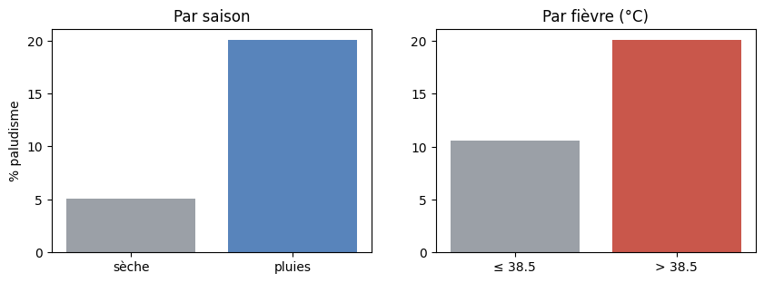
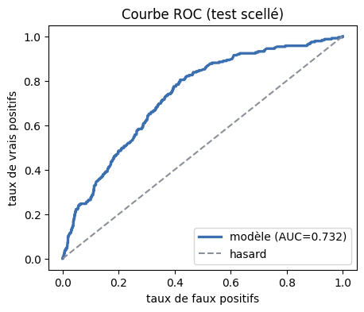
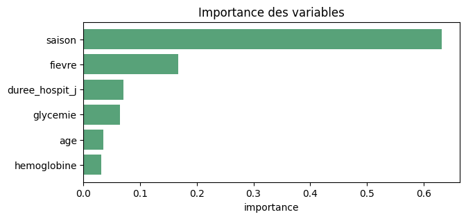

import numpy as np
import pandas as pd
import matplotlib.pyplot as plt
np.set_printoptions(precision=4, suppress=True)
print("Outils prêts.")Outils prêts.Dr. El Hadji Bassirou TOURÉ · DMI · FST · UCAD
Ce notebook est le projet de synthèse du cours. On y mène un projet ML complet, comme dans une compétition de science des données (type Zindi), en mobilisant toutes les séances : cadrer → explorer → préparer (sans fuite) → comparer → régler → évaluer honnêtement → interpréter. La leçon centrale vous attend à l’étape 7.
Durée estimée : 1h30. Exécuter les cellules dans l’ordre.
Outils prêts.# Générateur officiel DataSANTÉ-221 (ne pas modifier)
def generate_datasante221(n=10_000, seed=221):
rng = np.random.default_rng(seed)
age = np.clip(rng.gamma(2.5, 14, n), 5, 85).round(0).astype(int)
glycemie = np.clip(rng.normal(5.5 + 0.05*age, 1.8), 3.0, 18.0).round(1)
hemoglobine = np.clip(rng.normal(12.5 - 0.02*age, 1.5), 6.0, 17.0).round(1)
fievre = np.clip(rng.normal(37.5, 0.9, n), 36.0, 41.5).round(1)
saison = rng.choice([0, 1], size=n, p=[0.55, 0.45])
duree = (1.0 + 0.05*age + 0.6*glycemie - 0.3*hemoglobine
+ 1.5*saison + rng.normal(0, 1.8, n)).clip(0.5, 30).round(1)
proba_palu = 1/(1+np.exp(-(-3 + 1.5*saison + 0.8*(fievre>38.5))))
palu = (rng.uniform(0,1,n) < proba_palu).astype(int)
return pd.DataFrame({'age':age,'glycemie':glycemie,'hemoglobine':hemoglobine,
'fievre':fievre,'saison':saison,'duree_hospit_j':duree,'paludisme':palu})
df = generate_datasante221()
df.head()| age | glycemie | hemoglobine | fievre | saison | duree_hospit_j | paludisme | |
|---|---|---|---|---|---|---|---|
| 0 | 47 | 9.3 | 11.8 | 38.0 | 0 | 3.8 | 0 |
| 1 | 18 | 5.1 | 13.0 | 39.5 | 1 | 0.5 | 0 |
| 2 | 56 | 7.2 | 9.5 | 37.1 | 1 | 6.5 | 0 |
| 3 | 36 | 6.8 | 10.4 | 36.1 | 1 | 5.0 | 1 |
| 4 | 9 | 6.2 | 12.0 | 37.9 | 0 | 2.2 | 0 |
Avant tout code : quelle tâche, quelle métrique, quelle référence, quelle contrainte ?
# La cible et sa prévalence
print("nombre de patients :", len(df))
print("variables :", [c for c in df.columns if c != 'paludisme'])
print(f"prévalence du paludisme : {df['paludisme'].mean()*100:.1f}%")
print()
print("-> tâche : classification binaire")
print("-> données : déséquilibrées (11.8% de positifs) => l'accuracy sera trompeuse")
print("-> métrique : AUC + rappel (repérer les malades)")
print("-> métier : rater un malade (faux négatif) est plus grave qu'une fausse alerte")nombre de patients : 10000
variables : ['age', 'glycemie', 'hemoglobine', 'fievre', 'saison', 'duree_hospit_j']
prévalence du paludisme : 11.8%
-> tâche : classification binaire
-> données : déséquilibrées (11.8% de positifs) => l'accuracy sera trompeuse
-> métrique : AUC + rappel (repérer les malades)
-> métier : rater un malade (faux négatif) est plus grave qu'une fausse alerteComprendre avant de modéliser : repérer les facteurs de risque à l’œil nu.
| age | glycemie | hemoglobine | fievre | duree_hospit_j | |
|---|---|---|---|---|---|
| count | 10000.0 | 10000.0 | 10000.0 | 10000.0 | 10000.0 |
| mean | 34.5 | 7.2 | 11.8 | 37.5 | 4.3 |
| std | 20.4 | 2.0 | 1.6 | 0.9 | 2.7 |
| min | 5.0 | 3.0 | 6.1 | 36.0 | 0.5 |
| 25% | 18.0 | 5.8 | 10.7 | 36.9 | 2.2 |
| 50% | 31.0 | 7.2 | 11.8 | 37.5 | 4.1 |
| 75% | 47.0 | 8.6 | 12.8 | 38.1 | 6.1 |
| max | 85.0 | 16.6 | 17.0 | 40.8 | 15.3 |
# Taux de paludisme par saison et par niveau de fièvre
print("paludisme par saison :")
for s, nom in [(0, 'sèche'), (1, 'pluies')]:
sub = df[df['saison'] == s]
print(f" saison {nom:7} : {sub['paludisme'].mean()*100:5.1f}% (n={len(sub)})")
print("\npaludisme par fièvre :")
for f, nom in [(False, 'fièvre <= 38.5'), (True, 'fièvre > 38.5')]:
sub = df[(df['fievre'] > 38.5) == f]
print(f" {nom:14} : {sub['paludisme'].mean()*100:5.1f}% (n={len(sub)})")paludisme par saison :
saison sèche : 5.1% (n=5549)
saison pluies : 20.1% (n=4451)
paludisme par fièvre :
fièvre <= 38.5 : 10.6% (n=8748)
fièvre > 38.5 : 20.1% (n=1252)# Visualiser ces deux facteurs
fig, axes = plt.subplots(1, 2, figsize=(10, 3.2))
sa = [df[df['saison']==s]['paludisme'].mean()*100 for s in [0,1]]
axes[0].bar(['sèche','pluies'], sa, color=['#8a8f98','#3b6fb0'], alpha=0.85)
axes[0].set_ylabel("% paludisme"); axes[0].set_title("Par saison")
fv = [df[(df['fievre']>38.5)==f]['paludisme'].mean()*100 for f in [False,True]]
axes[1].bar(['≤ 38.5','> 38.5'], fv, color=['#8a8f98','#c0392b'], alpha=0.85)
axes[1].set_title("Par fièvre (°C)")
plt.show()
Lecture. La saison des pluies (20,1 % vs 5,1 %) et la forte fièvre (20,1 % vs 10,6 %) ressortent nettement. Le modèle final devra s’appuyer sur ces variables — on le vérifiera.
La toute première opération : mettre le test de côté. Puis préparer dans un pipeline.
from sklearn.model_selection import train_test_split
feats = ['age','glycemie','hemoglobine','fievre','saison','duree_hospit_j']
X = df[feats].values
y = df['paludisme'].values
# Sceller 20% comme test, AVANT tout, en stratifiant
X_tr, X_te, y_tr, y_te = train_test_split(
X, y, test_size=0.20, random_state=42, stratify=y)
print(f"train : {len(X_tr)} | test scellé : {len(X_te)}")
print(f"prévalence train {y_tr.mean()*100:.1f}% / test {y_te.mean()*100:.1f}% (préservée)")train : 8000 | test scellé : 2000
prévalence train 11.8% / test 11.8% (préservée)# Préparation + modèle dans UN pipeline : la standardisation sera réapprise à chaque pli
from sklearn.pipeline import Pipeline
from sklearn.preprocessing import StandardScaler
from sklearn.linear_model import LogisticRegression
modele_logistique = Pipeline([
("scaler", StandardScaler()),
("clf", LogisticRegression(max_iter=1000)),
])
print("pipeline prêt : la standardisation est encapsulée (anti-fuite).")pipeline prêt : la standardisation est encapsulée (anti-fuite).Une référence triviale, à battre. Ici : prédire toujours la classe majoritaire.
baseline (classe majoritaire) : accuracy = 0.8824
-> 88% d'accuracy SANS rien apprendre : un piège que l'on retrouvera à l'étape 7.Toutes les familles du cours, même validation croisée stratifiée, même métrique (AUC).
from sklearn.model_selection import cross_val_score, StratifiedKFold
from sklearn.tree import DecisionTreeClassifier
from sklearn.ensemble import RandomForestClassifier, GradientBoostingClassifier
from sklearn.neural_network import MLPClassifier
cv = StratifiedKFold(n_splits=5, shuffle=True, random_state=0)
modeles = {
"Régression logistique": modele_logistique,
"Arbre de décision": DecisionTreeClassifier(max_depth=5, random_state=0),
"Random Forest": RandomForestClassifier(n_estimators=300, random_state=0),
"Gradient Boosting": GradientBoostingClassifier(random_state=0),
"Réseau (MLP 16-8)": Pipeline([("sc", StandardScaler()),
("clf", MLPClassifier(hidden_layer_sizes=(16,8),
max_iter=1000, random_state=0))]),
}
print(f"{'modèle':<24}{'AUC CV (moy ± écart)'}")
for nom, m in modeles.items():
sc = cross_val_score(m, X_tr, y_tr, cv=cv, scoring="roc_auc")
print(f"{nom:<24}{sc.mean():.4f} ± {sc.std():.4f}")modèle AUC CV (moy ± écart)
Régression logistique 0.6897 ± 0.0160
Arbre de décision 0.6730 ± 0.0153
Random Forest 0.6676 ± 0.0096
Gradient Boosting 0.6906 ± 0.0200
Réseau (MLP 16-8) 0.6884 ± 0.0242Lecture. Les modèles se tiennent dans un mouchoir (AUC ≈ 0,67–0,69). Le gradient boosting mène de peu. Conformément aux Séances 8 et 10, sur ce tabulaire, le complexe n’écrase pas le simple. On retient le gradient boosting comme candidat à régler.
Recherche d’hyperparamètres en validation croisée. Le test reste scellé.
from sklearn.model_selection import GridSearchCV
grille = {
"n_estimators": [100, 200],
"max_depth": [2, 3],
"learning_rate": [0.05, 0.1],
}
gs = GridSearchCV(GradientBoostingClassifier(random_state=0),
grille, cv=cv, scoring="roc_auc", n_jobs=-1)
gs.fit(X_tr, y_tr)
print("meilleurs hyperparamètres :", gs.best_params_)
print(f"AUC CV du meilleur réglage : {gs.best_score_:.4f}")
modele_final = gs.best_estimator_meilleurs hyperparamètres : {'learning_rate': 0.05, 'max_depth': 2, 'n_estimators': 200}
AUC CV du meilleur réglage : 0.6972On ouvre le test UNE seule fois. L’AUC est honnête… mais regardons ce que le modèle prédit vraiment.
from sklearn.metrics import roc_auc_score, accuracy_score, confusion_matrix
proba = modele_final.predict_proba(X_te)[:, 1]
pred = modele_final.predict(X_te)
print(f"AUC test : {roc_auc_score(y_te, proba):.4f}")
print(f"accuracy test : {accuracy_score(y_te, pred):.4f}")
print("\nTout semble bien... vraiment ?")AUC test : 0.7321
accuracy test : 0.8820
Tout semble bien... vraiment ?# La matrice de confusion révèle la vérité
cm = confusion_matrix(y_te, pred)
print("matrice de confusion (seuil 0.5) :")
print(f" prédit sain prédit palu")
print(f" réel sain {cm[0,0]:5d} {cm[0,1]:4d}")
print(f" réel palu {cm[1,0]:5d} {cm[1,1]:4d}")
print(f"\nvrais positifs (malades détectés) : {cm[1,1]}")
print(f"faux négatifs (malades MANQUÉS) : {cm[1,0]}")matrice de confusion (seuil 0.5) :
prédit sain prédit palu
réel sain 1764 1
réel palu 235 0
vrais positifs (malades détectés) : 0
faux négatifs (malades MANQUÉS) : 235LA LEÇON DU CAPSTONE. Le modèle « à 88 % d’accuracy » ne prédit jamais « paludisme » : 0 vrai positif, 235 malades manqués. Il a appris à dire « sain » à tout le monde — exactement la baseline. L’accuracy, gonflée par la classe majoritaire, masquait un échec complet.
Le remède : abaisser le seuil de décision pour attraper des malades.
# Abaisser le seuil : favoriser le rappel (santé : ne pas rater de malades)
from sklearn.metrics import precision_score, recall_score
for seuil in [0.5, 0.3, 0.2, 0.15]:
p = (proba >= seuil).astype(int)
print(f"seuil {seuil:.2f} : précision = {precision_score(y_te, p, zero_division=0):.3f}, "
f"rappel = {recall_score(y_te, p):.3f}")seuil 0.50 : précision = 0.000, rappel = 0.000
seuil 0.30 : précision = 0.351, rappel = 0.140
seuil 0.20 : précision = 0.260, rappel = 0.285
seuil 0.15 : précision = 0.210, rappel = 0.711Lecture. Au seuil 0,5, rappel nul. En l’abaissant, on récupère du rappel (on attrape des malades) au prix de la précision (plus de fausses alertes). Le bon seuil découle de la contrainte métier de l’étape 1 : en santé, mieux vaut une fausse alerte qu’un malade manqué.
# La courbe ROC : tous les seuils d'un coup
from sklearn.metrics import roc_curve
fpr, tpr, _ = roc_curve(y_te, proba)
fig, ax = plt.subplots(figsize=(5, 4))
ax.plot(fpr, tpr, color="#3b6fb0", lw=2.4, label=f"modèle (AUC={roc_auc_score(y_te,proba):.3f})")
ax.plot([0,1],[0,1], "--", color="#8a8f98", label="hasard")
ax.set_xlabel("taux de faux positifs"); ax.set_ylabel("taux de vrais positifs")
ax.legend(); ax.set_title("Courbe ROC (test scellé)")
plt.show()
Les variables importantes doivent recouper l’EDA — gage de confiance.
# Importance des variables du modèle final
imp = modele_final.feature_importances_
ordre = np.argsort(imp)[::-1]
print("importance des variables :")
for i in ordre:
print(f" {feats[i]:<16} {imp[i]:.3f}")
fig, ax = plt.subplots(figsize=(7, 3))
o = np.argsort(imp)
ax.barh([feats[i] for i in o], [imp[i] for i in o], color="#2e8b57", alpha=0.8)
ax.set_xlabel("importance"); ax.set_title("Importance des variables")
plt.show()importance des variables :
saison 0.632
fievre 0.168
duree_hospit_j 0.070
glycemie 0.064
age 0.035
hemoglobine 0.031
Lecture. Le modèle s’appuie d’abord sur la saison (0,63), puis la fièvre (0,17) — exactement les facteurs repérés à l’EDA. Cette cohérence est rassurante : le modèle a capté des liens réels. On peut l’expliquer à un médecin : « le risque dépend d’abord de la saison, puis de la fièvre ».
À partir de tout ce qui précède, choisissez et justifiez un seuil de décision pour un déploiement en centre de santé, en supposant qu’on dispose des moyens de tester 20 % des patients. Calculez, à ce seuil, combien de malades seraient détectés et combien de fausses alertes seraient générées sur le test.
Bravo : vous avez mené un projet de Machine Learning de bout en bout.